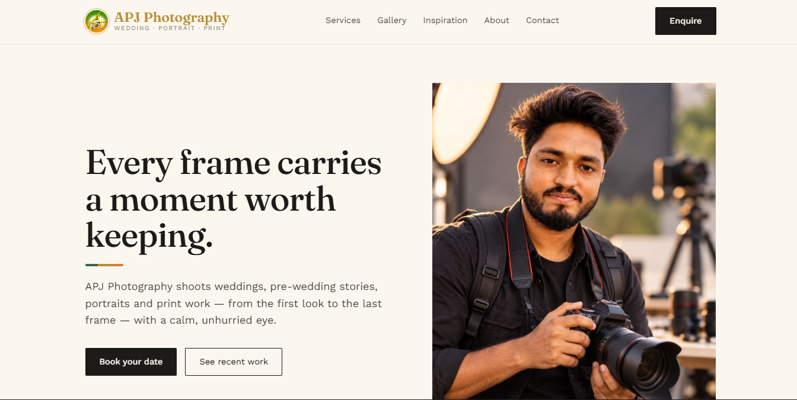
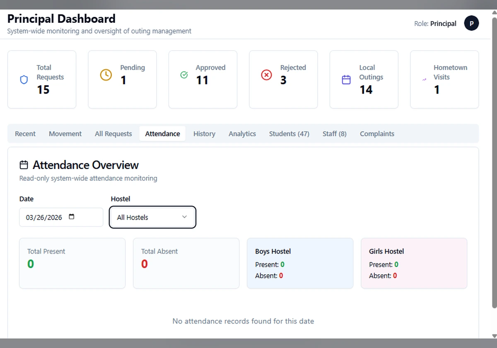
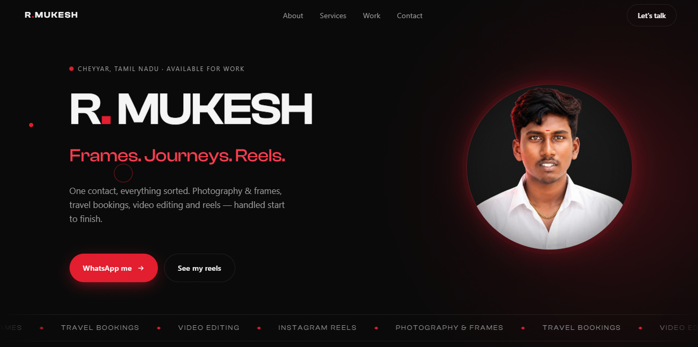
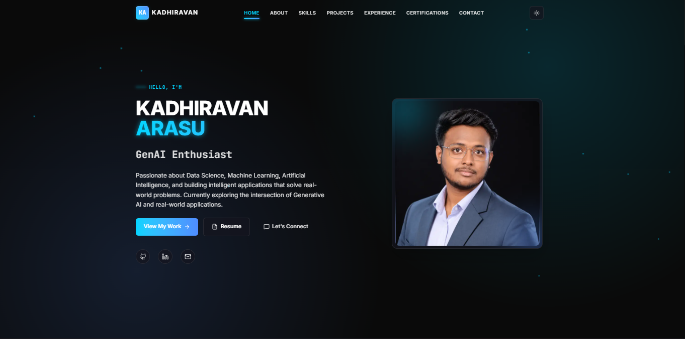
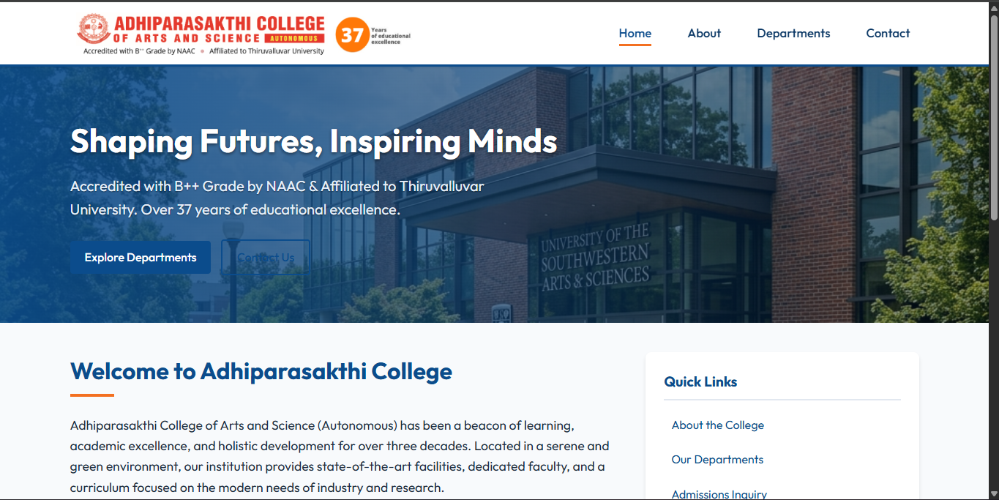
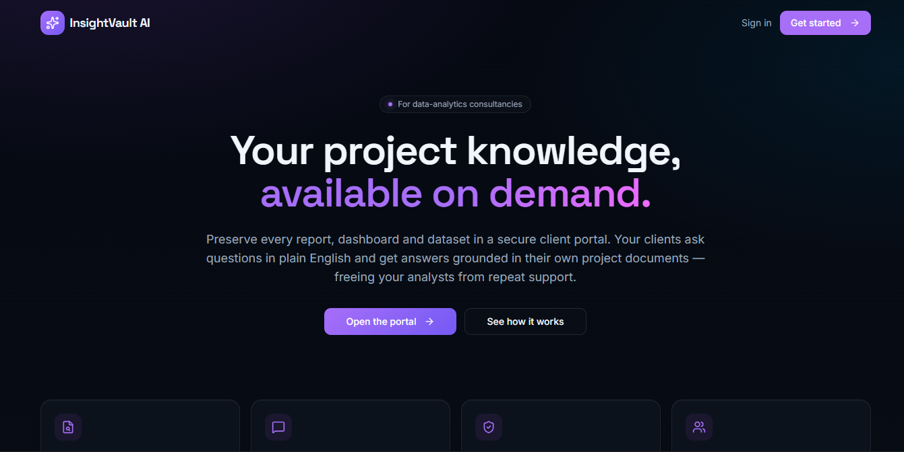

Build with purpose
Create practical digital experiences that solve real problems.
WEBSITE DEVELOPER · CREATIVE BUILDER
I build websites and explore modern frontend technologies, with a foundation in data analytics.
Thoughtful design. Practical development.
01 ABOUT ME
HOW I WORK
Create practical digital experiences that solve real problems.
Focus on usability, responsive layouts, and readable interfaces.
Grow through real projects, experimentation, and feedback.
I'm Kadhiravan, a website developer focused on WordPress and frontend development. I enjoy turning ideas into responsive, practical digital experiences through hands-on projects.
From building websites to exploring modern frontend technologies, I'm continuously learning and improving my approach to development. I also have foundational training in data analytics, which broadens how I explore and solve problems.
WordPress, responsive layouts and frontend projects built around practical needs.
Developing my frontend skills while building a foundation in data analytics.
02 MY TOOLKIT
A growing toolkit shaped by practical projects, experimentation and continuous learning.
Building websites with a focus on responsive layouts, visual consistency and practical functionality.
Developing my understanding of component-based development through tutorials and hands-on practice.
Foundational knowledge gained through courses and certificates in data analysis and visualization.
Using development tools to manage code, preview websites and test layouts across screens.
03 SELECTED WORK
A selection of websites and digital projects I've worked on while building my skills and exploring new technologies.

A photography website designed to present visual work through a focused, image-led experience.

A hostel management project focused on organizing hostel information and simplifying everyday workflows.

A portfolio website created to present a client's work, profile, and professional services.

My own portfolio, built to showcase projects, technical skills, and my progress as a web developer.

A college-focused website project designed to organize information and present it in a clear layout.

An AI-focused project. Add a more specific description based on its actual purpose and implemented features.
04 WHAT I CAN DO
Practical web solutions focused on usability, clear design, and helping businesses build their online presence.
Responsive websites built with WordPress, Astra, and Elementor to help present a business or personal brand online.
Website development ↗Clean, responsive web interfaces using HTML, CSS, and JavaScript, with attention to layout and usability.
Web interfaces ↗Foundational data analysis and visualization work using tools and techniques I have learned through projects and study.
Data exploration ↗Assistance with responsive layouts, visual consistency, content updates, and small website improvements.
Website refinement ↗Have a website idea in mind?
Let's discuss it ↗05 MY JOURNEY
My journey combines practical experience in web and mobile development, data science, and continuous learning.
Black I Technologies and Solutions
Developing cross-platform mobile applications using Flutter and Dart. Working with Firebase services, REST API integration, and state management.
BDremz Global Solutions
Worked on data preprocessing, exploratory data analysis, and machine learning projects using Python, Pandas, NumPy, and Scikit-learn. Created data visualizations and prepared insights from real-world datasets.
CodSoft
Built a customer churn classification model using Python and Scikit-learn on 10,000+ records. Applied SMOTE, GridSearchCV, and feature engineering to achieve approximately 85% accuracy.
St. Peter's College of Engineering and Technology
2022 – 2026
Besant Technologies
Data science, machine learning, visualization, and SQL.
Verify credential ↗Accenture Forage
Data cleaning, modeling, and client presentation design.
Verify credential ↗BCG X Forage
Predictive modeling and data-driven financial insights.
Verify credential ↗Tata Forage
Dashboard creation and visualization for business questions.
Verify credential ↗British Airways Forage
Web scraping and predictive modeling for customer bookings and feedback sentiment.
Verify credential ↗Udemy · Proper Dot Institute
CSS, JavaScript, PHP, and Python programming.
Verify credential ↗Continuously expanding my skills across mobile development, web technologies, data science, and machine learning.
06 GET IN TOUCH
I'm open to web development opportunities, collaborations, and freelance projects. If you have an idea or opportunity to discuss, I'd be happy to hear from you.
kadhiravan@blackitechs.com ↗